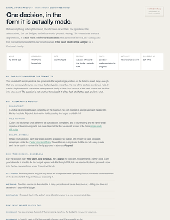
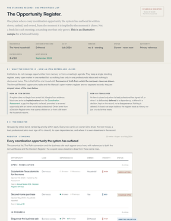
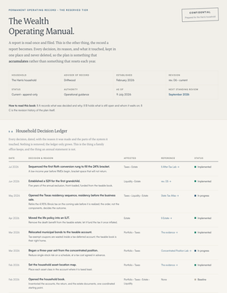
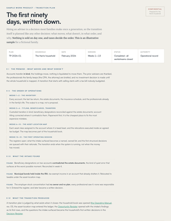
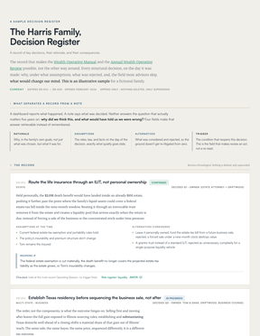

The flagship engagement
One review. Every system, read together.
Not a meeting, and not a plan you file away. An engagement: your investments, taxes, estate, liquidity, and risk read as one system, the findings written down, and an owner put against every gap. You leave with the documents, yours to keep.
- To begin
- Fifteen minutes
- By phone. Nothing to prepare.
- If it proceeds
- Two to three weeks
- Then one sitting to walk the report through.
- What you receive
- Five documents
- Yours to keep and to share with your CPA and counsel.
- What it costs
- A defined fee
- Agreed in writing before any work begins.
What you receive
The review produces documents, not impressions. Each is yours to keep and to share with your CPA and estate attorney. Magnitudes appear where they belong: after the judgment, as evidence for it. Five artifacts leave the room with you:

01 · The findingsThe Coordination ReportThe written findings: what we observed in each system, the consequence of each, and who owns its resolution. The tax line is computed privately, on your holdings, and enters as evidence beneath the finding, never as the headline.Read a specimen memorandum →
02 · The standing recordThe Opportunity RegisterEvery open matter the review surfaces, entered in one standing register with a status, an owner, and its dependency, so coordination continues after the meeting ends. Not tasks. Not reminders. The register is the product of the relationship.View a specimen register →
03 · The system of recordThe Wealth Operating ManualThe written operating system for your household: every decision, its rationale, and the conditions that would reopen it — so ten years from now it still makes sense, even to a different advisor.See the Manual →
04 · The opening planYour 90-Day PlanThe first owned decisions, sequenced: which matters move first, who executes them, and the date each closes. The review’s conclusions become a schedule, not a stack of recommendations.See a specimen transition plan →
05 · The reasoning of recordThe Decision RegisterThe decision log of the relationship: every judgment recorded as it is made, with the reasoning behind it and the conditions that would reopen it. It is what lets a decision be revisited years later on the facts that produced it, rather than re-argued from memory.Read a specimen decision register →Households that proceed to a standing engagement keep all five, maintained year over year through the Annual Wealth Operating Review. The Report diagnoses; the Register sustains.
The record
The review produces five documents. The Report diagnoses; the Register sustains; the Manual remembers.
Households that proceed keep all five, maintained year over year through the Annual Wealth Operating Review.
What the review examines
Implementation
Is each asset in the account where it is taxed least?
Tax character
Where is the return quietly leaking, and could you keep more of it?
Ownership
Would your family inherit it the way the documents intend?
Liquidity
Can you reach your money in the year you actually need it?
Risk & governance
Does one decision quietly create the next problem?
The connections
Who, today, is actually coordinating all of it?
How it proceeds, and how long it takes
The introduction Fifteen minutes
You see how we think, we understand your situation, and together we decide whether a review is warranted. Nothing to prepare, and no documents. If it isn’t warranted, we will say so.
The review, privately Two to three weeks
Your systems are read one at a time, on your actual holdings, documents, and state. The instruments that compute the tax line run here, on your numbers, not on a public page.
The report, walked through together One sitting
The Coordination Report and the opening Register, reviewed with you, and with your CPA and estate attorney where the findings touch their work.
What changes after the review
- The register stays open
- Every matter the review surfaced keeps its owner and its next date until it closes. Nothing is finished because a meeting ended.
- Decisions arrive early
- An account opened, a beneficiary form signed, a move considered: each is read against the documents and the plan before it settles, not at the next annual meeting.
- Your CPA and attorney are called first
- Where a matter is theirs, they are brought in while it is still a choice. The filing and the document are never the last to know.
Who the review is for, and who it is not for
A review is warranted when
- Several accounts, and an estate plan already drafted.
- An operating business, or a concentrated position.
- Income or property that crosses a state line.
It is not warranted when
- One account, and no estate documents yet.
- Nothing has changed in years, and nothing is planned.
- You want someone to run a portfolio, not coordinate a household.
In any of those three cases we will say so on the introduction call, and no proposal follows.
What we will ask you for
A review of holdings, documents, and a state implies handing statements and trust documents to someone you have met once. Here is the whole list, in advance.
Statements
One recent statement per account, including the ones we will not manage.
Documents
The estate documents as executed, and the entity documents if there is a business.
Last year’s return
The whole return, not a summary. The bracket picture comes from it.
Nothing, at first
The introduction call requires no documents at all.
On fees: Driftwood charges to coordinate decisions, not to manage a number. The review’s fee is a defined engagement fee, agreed in writing before any work begins. How we are paid, and why, is set out in full on Fees.
Request a Coordination Review.
It begins with the fifteen-minute introduction. There is nothing to prepare, and if a review isn’t warranted, we’ll tell you on the call.

Alec Messino, Founder
Every review is conducted personally. You are not handed to a team.